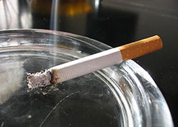
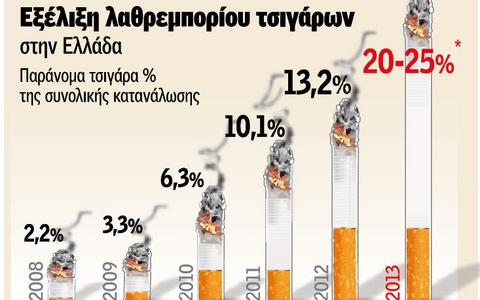

Τα χαρακτηριστικά του λαθρεμπόριου καπνού είναι:
Xρησιμοποιείται καπνός χαμηλής ποιότητας, συχνά επιβαρυμένος ακόμα και με βαρέα μέταλλα, μη επιτρεπτά φυτοφάρμακα και ξένες ύλες, ενώ τα φίλτρα είναι συνήθως κατώτερης ποιότητας

Το 2013 ένα στα τέσσερα τσιγάρα ήταν λαθραίο (25%), ενώ το 2008 ήταν μόνο 2,2%. Οι απώλειες των εσόδων του Δημοσίου υπολογίζονται πάνω από 400 εκ. ευρώ ετησίως
